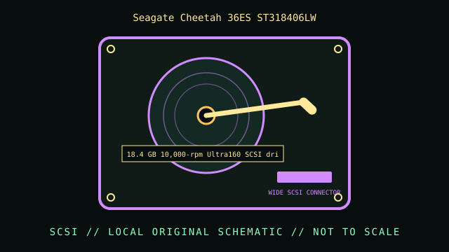

[ INDIVIDUAL COMPONENT // HARD DISK DRIVE ]
Seagate Cheetah 36ES ST318406LW
18.4 GB 10,000-rpm Ultra160 SCSI drive. This record is limited to the exact model and documented variant; related model numbers, revisions and capacities can have different interfaces and specifications.

IDENTIFICATION: Match the complete label, suffix, firmware and drive inquiry with the cited model documentation. Do not infer sector format or recording method from product family alone.
Verified model specifications
| Dedicated catalog subcategory | SCSI hard drives |
|---|---|
| Exact model | Seagate Cheetah 36ES ST318406LW |
| Product generation | 18.4 GB 10,000-rpm Ultra160 SCSI drive |
| Form factor | 3.5-inch, 1-inch-height class; this classification is not a dimensional drawing. |
| Interface | 68-pin Wide Ultra160 SCSI LVD/SE multimode. |
| Capacity, performance, sector / recording details | 18.4 GB formatted capacity; 10,000 RPM; 4 MB buffer and 512-byte logical sectors per the ST318406LW family manual. This is a 36ES model, not the separate Cheetah 18XL ST318404LW. |
| Compatibility | Needs a compatible Wide SCSI host and a terminated LVD/SE bus. LVD cables, adapters and termination must match the controller; avoid passive SE terminators on an LVD segment unless the bus design allows them. |
Handling, service & preservation
- Log SCSI ID, firmware, grown defect/list state and read errors before reuse. If the drive contains data, acquire a read-only image with error logging rather than running repair utilities on the source.
- Photograph the full label, board marks, connectors, jumpers/carrier, and date/firmware codes before service; retain the exact model suffix with collection metadata.
- Never open a hard drive outside a qualified clean environment. Stop repeated power-on attempts if the unit clicks, drops offline, or develops read errors.
- Preserve source data by making independent copies and validating checksums; SMART/self-tests cannot guarantee reliability. Distinguish measured condition from manufacturer specifications.
Model-specific source
- Seagate Cheetah 36ES ST318406LW Installation Guide (archival scan)Cheetah 36ES manual family explicitly identifies ST318406LW; do not substitute the similarly named 18XL ST318404LW.
For variants with family manuals, use the model-specific table and document revision that matches the drive label.